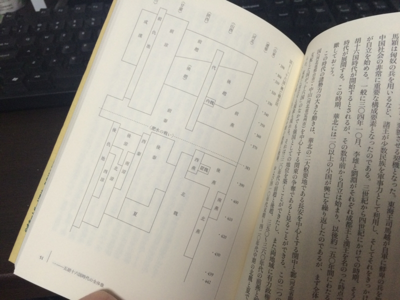

『五胡十六国―中国史上の民族大移動』
公開日：
")
- 作者: 三崎良章
- 出版社/メーカー: 東方書店
- 発売日: 2012/11
- メディア: 単行本
- クリック: 1回
- この商品を含むブログ (5件) を見る
先日、こんな記事を見かけた。
2015年3月25日、中国メディア・網易によると、中国の女優でコスプレーヤーとしても有名なシュー・チャオ（徐嬌、17）が、漢民族の民族衣装「漢服」姿で京都の伏見稲荷大社に参拝する写真を公開し、中国のインターネット上で物議を醸している。
- 「漢服姿は美しいけど、日本の伝統的な神社にはふさわしくない」
- 「漢服の宣伝に必死すぎ」
- 「日本人の反感を買って問題が起きなきゃいいけど」
正直、傍若無人なところがある中国の人たち（失礼！）がそんなこと気にしてるなんて意外だなー、などと思って、僕なんか
一方、日本人は洋服で参拝していた。
とか、はてブつけて遊んでいたのだけど、こんなコメントを目にして「おぉ」と思った（だからたまに他の人のはてブ読むの好きだったりする）。
個人的には全然問題ないと思うけども、漢服って古くから連綿と続く伝統衣装じゃなくて、近年のナショナリズムの高まりとともに作り直されたもの(→漢服復興運動)だから、中国では議論を呼ぶのかもしれないなと思った
ついつい忘れがちだけど、中国って漢民族が支配していた時期が案外短い。日本人は歴史上の中国というと「漢」か「（隋）唐」のイメージが強いと思うけれど、実は「唐」は異民族政権だ。つい百年前を遡って「清」、これも異民族政権。あと、「金（宋代に華北を支配）」や「元」も漢民族の政権ではなかった。日本人にとって「和服」は“忘れたもの”“捨ててしまったもの”だけれど、中国人にとって「漢服」というのは“奪われて取り返したもの”って言うイメージなのかも。そうなると、なぜこんな話になるのかというのがちょっとつながってくる気がする。
――さてさて。そんな中国の異民族政権時代のはしりが、今回扱う「五胡十六国」時代というわけなのだけど。
この時代は謂わば中国の“民族大移動”時代で割と重要だと思うのだけど、なんせ王朝の興廃がローマの軍人皇帝時代もビックリなほどにぐっちゃぐちゃでめんどくさい。そのためか、世界史の教科書では東晋と宋・斉・梁・陳（所謂南朝）の六朝文化と、北魏の太武帝＆仏教文化ぐらいを抑えておけば OK という扱いなのが残念だ。

（カオスな王朝の興亡図。「後秦」が「後泰」になってるのが残念だけど、系図とか充実してていいな。ついでに元号も載せといてほしかったけど）
誤解を恐れずに「五胡十六国」の時代を端的に表現すれば、中国が広く・深くなった時代と言えると思う。
まず、中原に「五胡」が侵入し、漢民族と混交していった。
漢人が混乱を避けて江南や西域へ移動した結果、これまで人口がスカスカだった江南の開発が進み、本格的に中国の一部となった（楚・呉の時代は領土こそ広いが、ヒトがいなかった！）。西域では漢の班超以来となる本格的進出が果たされ、仏教文化が伝わる道が舗装された（仏教の伝来自体は曹魏のことだっけ？）。朝鮮・沿海州方面にも漢人の亡命が多く、五胡の進出もあった。高句麗の広開土太王の碑文は、このころの状況をよく伝えている。ちなみに日本はと言えば、倭の五王（仁徳天皇とか）がいて、神功皇后の半島経営なんかがあったりなかったりする頃だ。
「五胡十六国」のクライマックスは前秦の苻堅による“幻の華北統一”と“淝水の戦い”だろう。
苻堅は氐族の出身だが、それに捕らわれることのなかった人物らしい。五胡であろうと漢人であろうと分け隔てなく登用し、とくに宰相の漢族・王猛を「俺の諸葛亮だ」と重用していた。王猛の助けもあり、苻堅は華北を統一。朝廷は整い、五胡も漢族も安心して農作や交易ができるようになり、秦は南の東晋を凌駕する国家に成長した。それをみて苻堅は
――「あとは南の（東）晋だけだ！」
と、思ったことだろう。五胡と漢民族の調和、四海の統一を夢見ていた理想主義者の苻堅は、南征に反対していた王猛（彼の親戚は東晋で重要な地位にあった）が亡くなると、群臣の反対を押し切り、百万の軍勢を興す。
苻堅の軍勢は破竹の勢いで南下。荊州の要である襄陽を陥とし、梁州刺史・南中郎将の朱序を捕えて配下とし、首都・建康（三国呉の時代の建業）の前進基地である寿春を抜く。とうとう軍勢は、淝水のほとりに到達した。しかし、さすがにここまでくると晋軍も精強で、なかなか手が出ない。
そこで苻堅は佯敗して敵を誘い、川を半分渡ったところを反転して討つことにした。渡河する晋軍、それに押されるかのように後退する秦軍。「頃はよし」と苻堅は反転を命じる。
しかし、兵士は誰一人踵を返さない。それどころか歩を早め、次第に潰走状態に陥っていった。自体を飲み込めないまま、苻堅も逃げ出した。あとで知ったところによると、降将・朱序らの漢族武将が敗走を煽っていたらしい。恩徳を施したのに裏切られ、飼い犬に手を噛まれた格好の苻堅は臍を噛んだが、もう取り返しはつかない。百万の軍は一朝にして潰え、配下の五胡や漢族は次々と独立。前秦は中国の統一目前で空中分解してしまった。
 (講談社文庫)")
- 作者: 陳舜臣
- 出版社/メーカー: 講談社
- 発売日: 1992/01/08
- メディア: 文庫
- 購入: 1人 クリック: 24回
- この商品を含むブログ (30件) を見る
自分はこの話を中学の時に陳舜臣さんの『小説十八史略』や『中国の歴史』で読んだのだけど、妙に気に入っている。確かに苻堅は失敗して非業の死を遂げたバカかもしれないけれど、かっこいいバカだ。ぜひ世界史の教科書の片隅に入れてあげてほしいと思う。